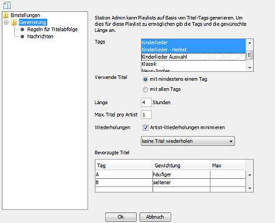
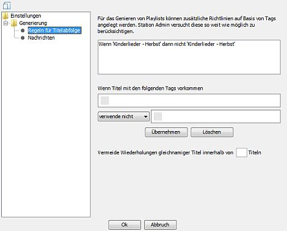
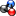
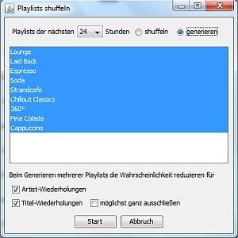
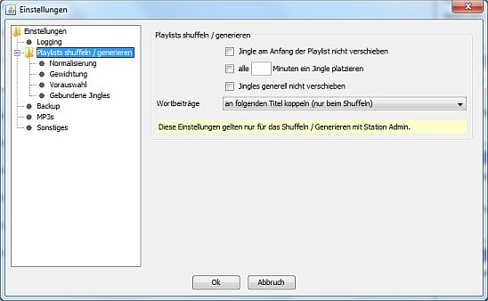

Was ist das?
Station Admin kann Playlists generieren: Das heißt eine Playlist wird auf Basis einer Liste von verfügbaren Titeln und gemäß gewisser Regeln neu erstellt. Im Gegensatz zum Shuffeln wo nur Titel umsortiert werden unterscheidet siche nach dem erneuten Generieren die Liste der verwendeten Titel von der vorherigen Version.
Grundlage für das Generieren sind getaggte Titel: Titel die mit einem oder mehreren Titeltags versehen sind bilden den Pool aus dem Titel für die Generierung ausgewählt werden. Die Titel müssen allerdings in irgendeiner anderen Playlist vorhanden sein - hierzu empfehlen sich spezielle Playlists die als Titelpool fungieren.
Der Vorteil des Generierens gegenüber dem Shuffeln ist das oft ein wesentlich größrerer Titelpool herangezogen werden kann: Für einzelne Playlist gilt eine Beschränkung auf maximal 3 Titel pro Artist. Beim Generieren kann das umgangen werden in dem man auf Titel aus mehreren Playlists zugreift.
Konfiguration

Öffne die Playlist für die Du die Generierung konfigurieren willst im Playlist-Viewer und öffne durch Klick auf  die Eigenschaften und wechsele zum -Tab.
die Eigenschaften und wechsele zum -Tab.

Optional kannst Du noch zusätzliche Richtlinien angeben die Station Admin bei der Generierung von Playlists beachten soll. Dies geschieht wieder auf Basis von Tags: Eine Richtlinie besteht aus einer Folge von Tags die vorkommen müssen damit die Regel greift und einem Tag dass in diesem Fall möglichst verwendet oder nicht verwendet werden soll.
Ein Beispiel: Du möchtest verhindern dass mehr als zwei langsame Titel hintereinander gespielt werden. Du hast alle langsamen Titel mit einem Tag "langsam" versehen. Als Bedingung wählst Du dann 2x das "langsam"-Tag aus (klicke auf die kleine graue Box um die Tagauswahl zu öffnen), in der Auswahlbox wählst Du "verwende nicht" und danach dann erneut "langsam".
Du kannst auch positive Richtlinien angeben - also z. B. so etwas wie "Wenn 'langsam', 'langsam' dann 'schnell'".
Bitte beachte dass die Einhaltung dieser Richtlinien nicht garantiert werden kann. Grundsätzlich hat die Minimierung von Artist- und Titelwiederholungen - insofern aktiviert - Vorrang. Wenn während der Generierung ein ausgewählter Titel eine Richtlinie verletzt werden die nächsten verfügbaren Titel getestet - sollten die nächsten 10 Titel jedoch alle eine Richtlinie verletzen so wird dies hingenommen.
Einzelne Playlist generieren
Wenn Du Dir eine Playlist anzeigen läßt kannst Du durch einen Klick auf

die Playlist neu generieren lassen. Die Playlist wird hierbei nicht automatisch abgespeichert - das mußt Du selbst noch tun.Mehrere Playlist generieren

Du kannst auch alle Playlists die gemäß Sendeplan in der nächsten Zeit gespielt werden auf einmal generieren lassen.
Wähle im -Menü . Es öffnet sich ein Dialog. Wähle den Zeitraum und die Option aus. In der Liste werden alle Playlists angezeigt die in diesem Zeitraum gespielt werden und für Regeln zum Generieren festgelegt wurden. Du kannst hier entweder alle Playlists ausgewählt lassen oder nur einzelne Playlists auswählen. Klicke auf unm das Generieren zu starten.
Normalerweise werden Artists und Titel die während der Generierung einer Playlist verwendet wurden bei der Generierung der folgenden Playlists abgewertet, eine erneute Auswahl ist damit weniger wahrscheinlich. Möchtest Du dass sich Artists und Titel wiederholen können entferne bitte die Auswahl bei den Checkboxes vor "Artist-Wiederholungen" bzw. "Titel-Wiederholungen" unten.
Die Abwertungen für bereits verwendete Artists und Titel schwächen sich über die Zeit ab - d. h. nach einiger
Zeit wird es wieder wahrscheinlicher dass ein Titel der in einer frühen Playlist schon einmal verwendet wurde erneut
verwendet wird. Möchtest Du dies nicht wähle bitte hinter - dann werden verwendete Titel dauerhaft und stärker abgewertet.
Die Playlists die auf diese Weise generieren werden werden automatisch auch abgespeichert.
Umgang mit Jingles und Wortbeiträgen

Es gibt einige Konfigurationsmöglichkeiten die den Umgang mit Jingles steuern. Öffne dazu im -Menü und wechsele auf das -Tab.
Alle in einer Playlist enthaltenen Jingles werden normalerweise beim Generieren gleichmäßig und in zufälliger Reihenfolge über die Playlist verteilt. Mit folgenden Optionen läßt sich das Verhalten ändern:
Wortbeiträge werden beim Generieren entweder zufällig verteilt oder bleiben an ihren Positionen stehen. Die für das Shuffeln verfügbaren alternativen Optionen zum Binden an vorhergehende oder nachfolgende Titel funktionieren beim Generieren nicht.
Gebundene Jingles oder Wortbeiträge
Einen Sonderfall stellen Jingles oder Wortbeiträge dar die an bestimmte Titel gebunden werden sollen und entweder vor oder nach den entsprechenden Titeln platziert werden sollen. Entsprechende Regeln lassen sich über konfigurieren.
Die Regeln für gebundene Jingles können in Gruppen organisiert werden. Für jede Gruppe kann ein Mindestabstand in Minuten konfiguriert werden. Angenommen Du hast mehrere Jingles die jeweils an bestimmte Künstler gebunden werden, möchtest aber nicht dass zwei solcher Jingles innerhalb einer halben Stunde vorkommen: Dann organisierst Du die Regeln für diese Jingles in einer Gruppe und setzt den Abstand auf 30 Minuten.
Eine Regel legt für ein einzelnes Jingle oder einen Wortbeitrag fest an welche Titel es gebunden wird. Folgende Einstellungen sind verfügbar:
Wenn Regeln für Künstler erstellt werden reicht ein Teil des Namens - d. h. eine Regel für "Foo" würde auch "Foo feat. Bar" akzeptieren. Für Alben und Künstler + Titel muss der gesamte Begriff passen - allerdings werden Groß-/Kleinschreibung sowie Leer- und Sonderzeichen ignoriert.
Best Practices
Alle Titel die für die Generierung zur Verfügung stehen sollen müssen in irgendeiner Playlist vorhanden sein - sonst hätte Station Admin keinen Zugriff auf die Titel. Es empfiehlt sich hierfür spezielle Playlisten anzulegen die als Pool fungieren, selbst aber nie gespielt werden. Man kann hier entweder mit einem Pool pro Sendunge ("Lounge 1", "Lounge 2", "Lounge 3", ...) oder mit einem globalen Pool arbeiten.
Station Admin unterstützt das Erzeugen von Pools durch die -Option aus dem Kontextmenü für Titel in einer Playlist oder in - die ausgewählten Titel werden dabei so auf die Playlists verteilt dass nicht mehr als 3 Titel eines Artists in einer Playlist vorkommen.
Grundlage für das Generieren sind wie gesagt getaggte Titel. Man kann z. B. ein Tag pro Sendung anlegen. Außerdem sollte man Tags anlegen für Titel die besonders häufig oder selten gespielt werden sollen ("Neue CDs").